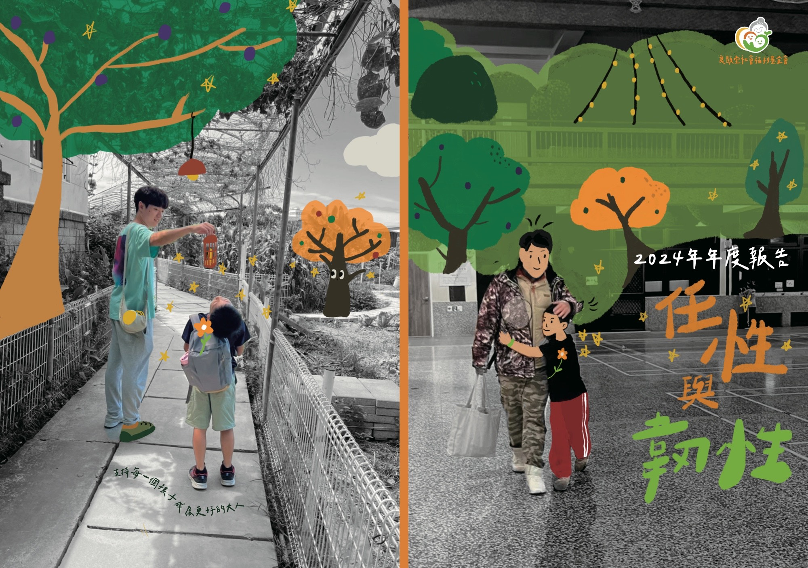
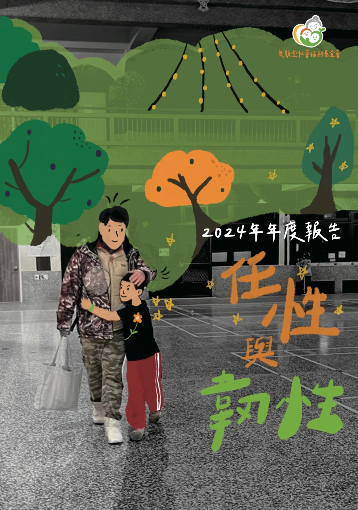
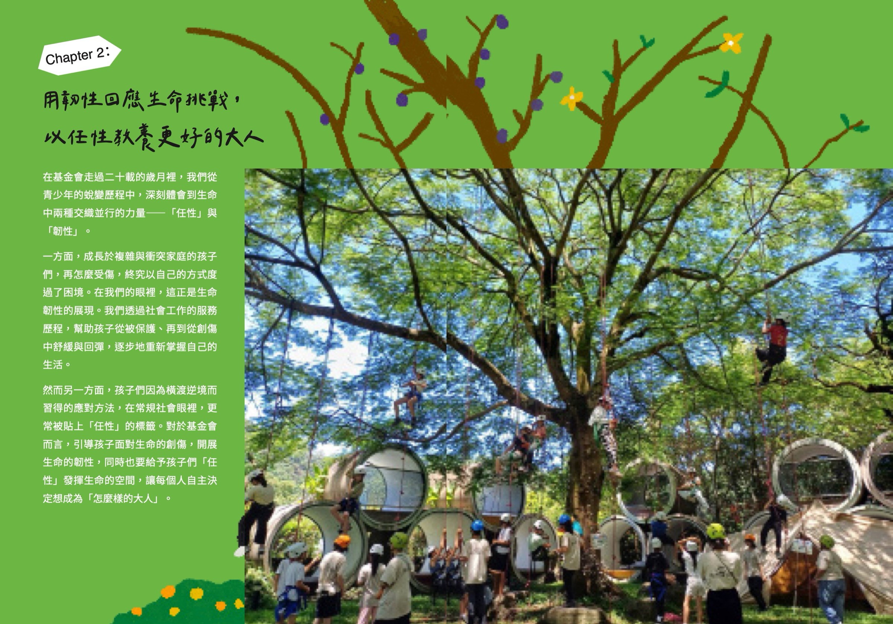
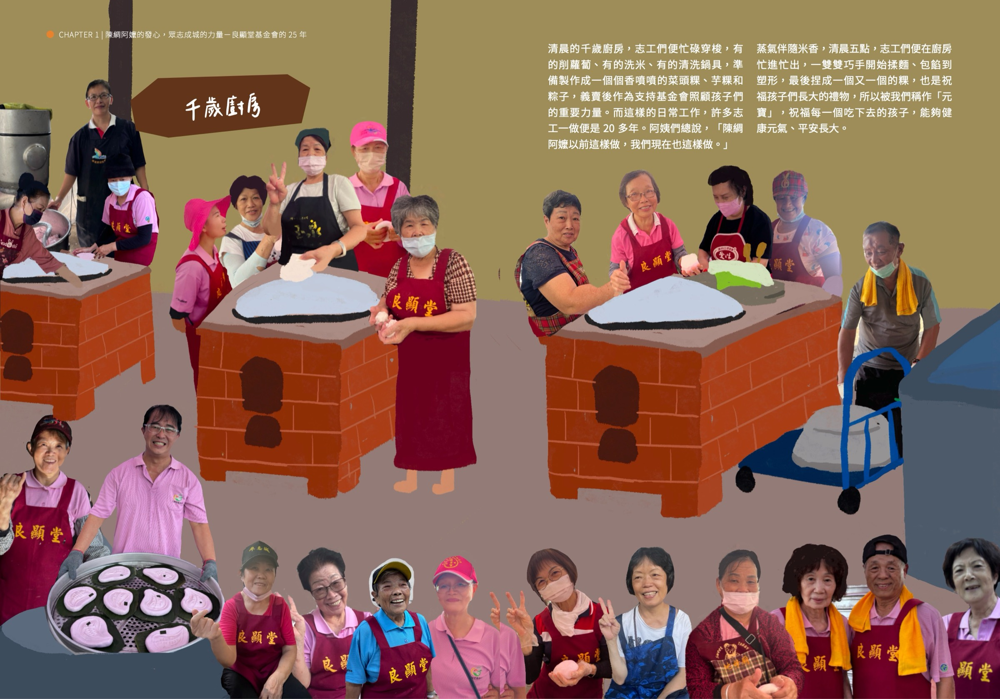
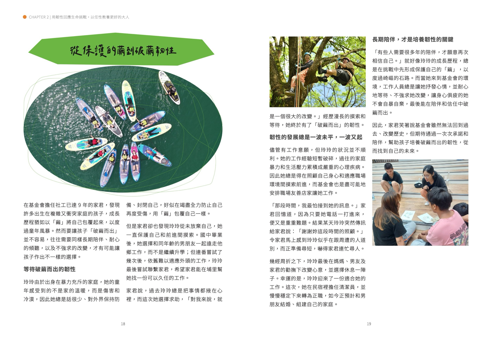
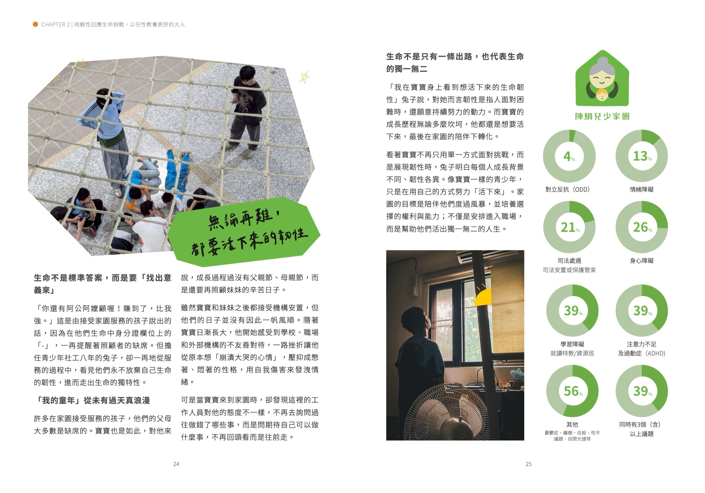
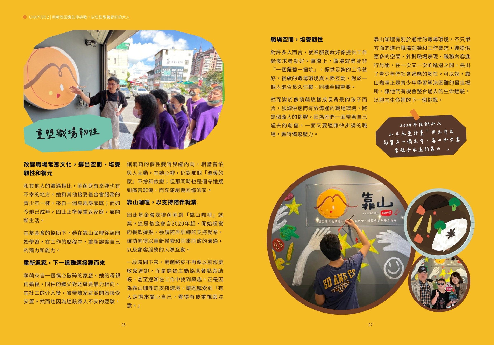
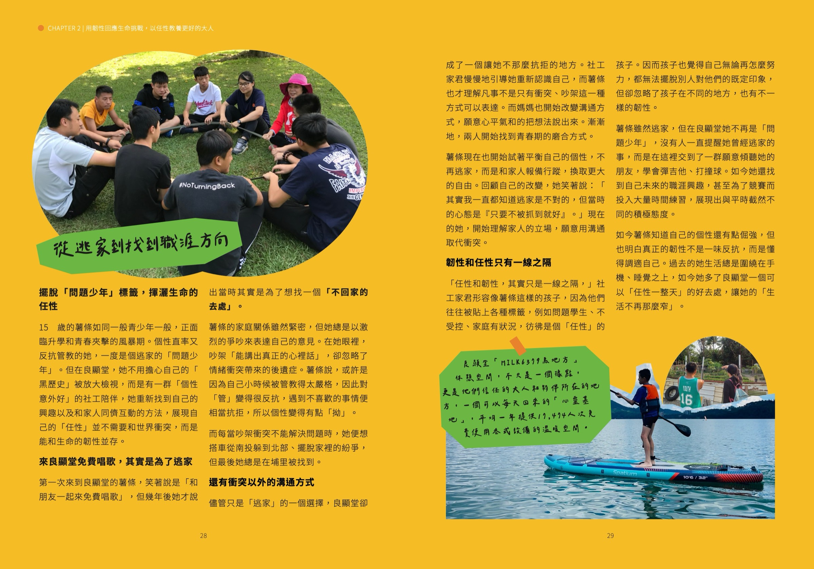

Chen Chou
Foundation
Identity and annual report design for a social welfare foundation that supports children and young people.

About
the project
I designed visual materials for the Liang-shean Tang Social Welfare Foundation, which works with children and young people and is known through its Chen Chou identity: the identity system, an annual report and merchandise.
The foundation supplied the content, and I was responsible for the design.
Role — Identity system, annual report layout, merchandise
Client — Liang-shean Tang Social Welfare Foundation
2024 Annual Report
Published in 2025. I was responsible for the layout.







Identity system, annual report, merchandise — Chian-Pei Yang
Client — Liang-shean Tang Social Welfare Foundation
Annual report — 2024 Annual Report, published 2025